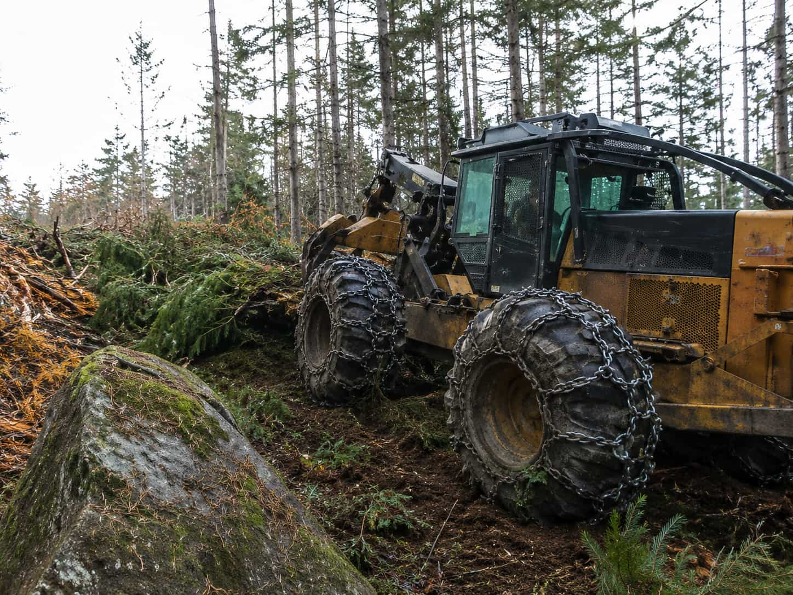
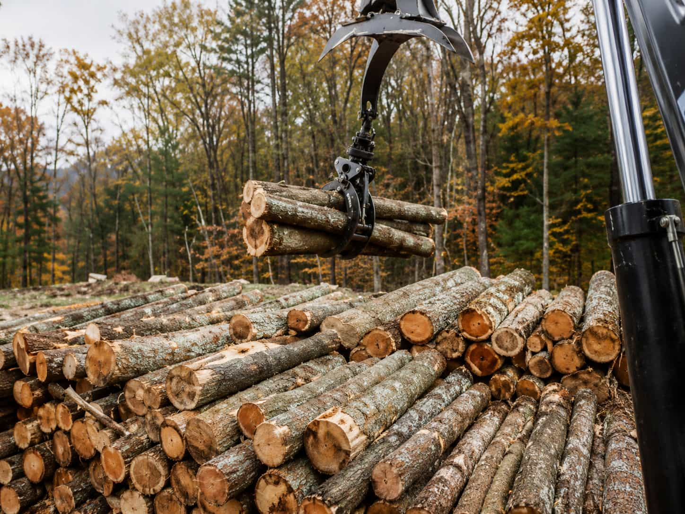
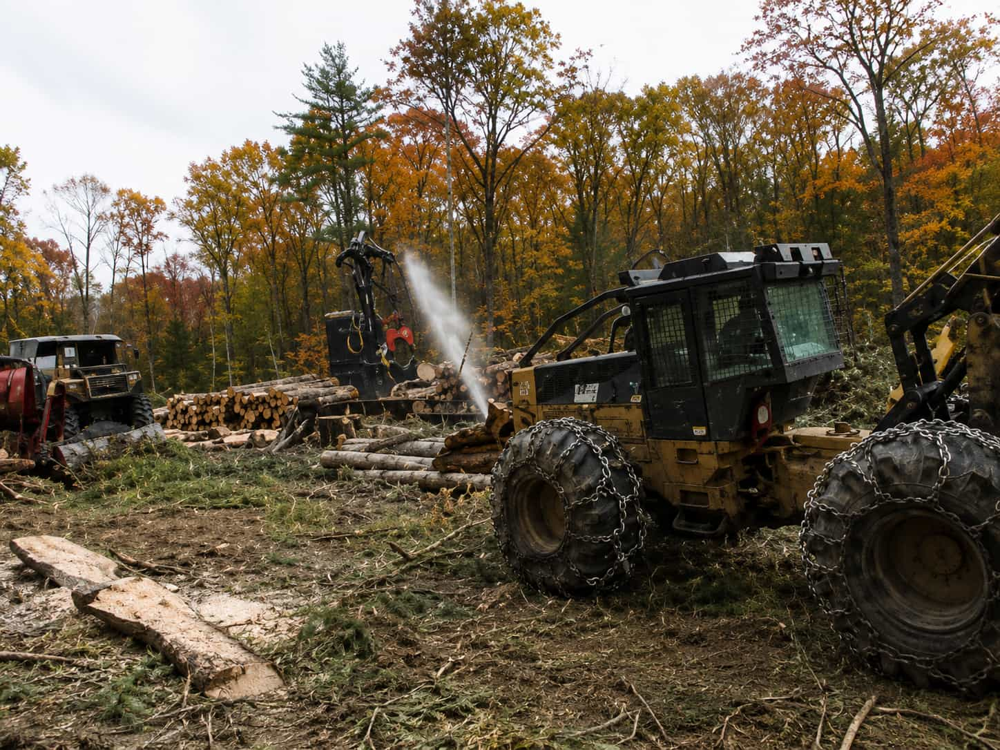
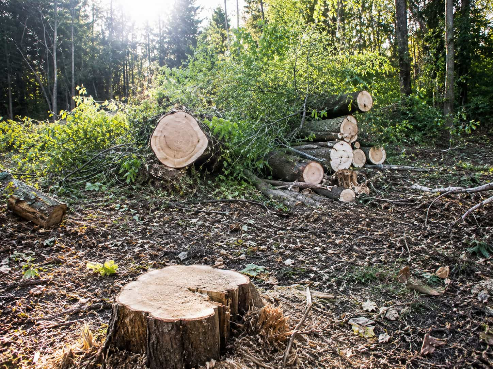
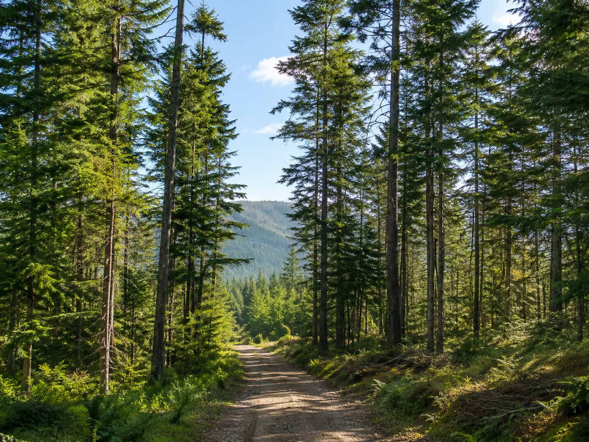
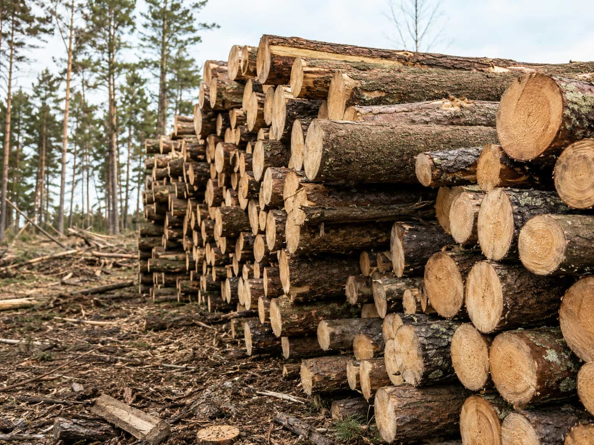

Leaning trees
Start a request when a tree is leaning, unstable or close to important property areas.
Oakline helps property owners start clear outdoor service requests and compare local provider options for tree removal, trimming, stump clearing, storm cleanup and land clearing.
About Oakline
Oakline helps property owners start safe tree removal, trimming, stump clearing and storm cleanup requests with clear service options and local provider matching.
Learn MoreOakline request support
Start a clear tree removal, trimming, stump clearing, storm cleanup or land clearing request without searching through providers one by one.
Oakline is an independent provider-matching platform. It helps property owners describe the tree, stump, storm debris or overgrown area, then move toward local service options that fit the request. You stay in control of which provider you review, contact and choose.
Common Tree Problems
From leaning trees to storm debris, Oakline helps you start the right request for the situation around your property.

Start a request when a tree is leaning, unstable or close to important property areas.

Share details about fallen trees, heavy limbs or blocked outdoor access areas.

Start a cleanup request for branches, debris and tree damage after heavy weather.

Compare stump grinding or removal options for leftover tree bases and exposed roots.

Start a trimming request for crowded branches, low clearance and outdoor overgrowth.

Explore request options for larger areas, brush-heavy spaces and outdoor cleanup needs.
Questions
Oakline helps property owners understand tree removal, trimming, stump clearing, storm cleanup and land clearing options in a simple and organized way.
No. Oakline is an independent provider-matching platform that helps property owners start requests and compare local service options for tree removal and related outdoor work.
Yes. You can start a request for urgent tree issues such as fallen limbs, hazardous branches, storm debris and blocked outdoor access areas.
Trimming and pruning focuses on branches, clearance and shaping, while full tree removal is for trees that are dead, unstable, damaged or unwanted.
Yes. If a tree has already been removed and the stump remains, Oakline can still help you start a stump grinding or stump removal request.
Yes. Land and lot clearing requests can be started for overgrown outdoor spaces, brush-heavy areas and property cleanup before the next project step.
Start your Oakline request to compare tree removal, trimming, stump clearing and storm cleanup options.
Start Your Request